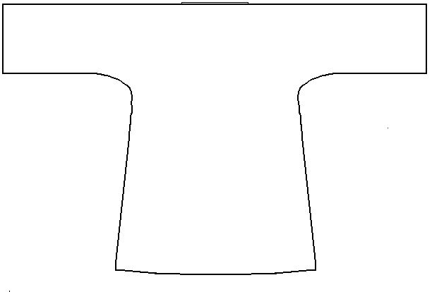

I am uncertain where this linen shirt was excavated. It is based on a photo of the find in the Eyewitness Books volume Archeology. The neck opening is reinforced with a dark blue striped bit of silk fabric. The shirt is made from a plain weave linen.
Return to Contents.
Some Clothing of the Middle Ages -- Shirts -- 14th Century Shirt, by I. Marc Carlson, Copyright 1999. This code is given for the free exchange of information, provided the Author's Name is included in all future revisions, and no money change hands-